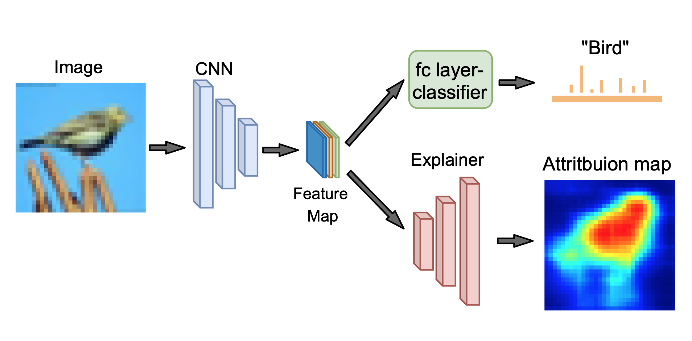
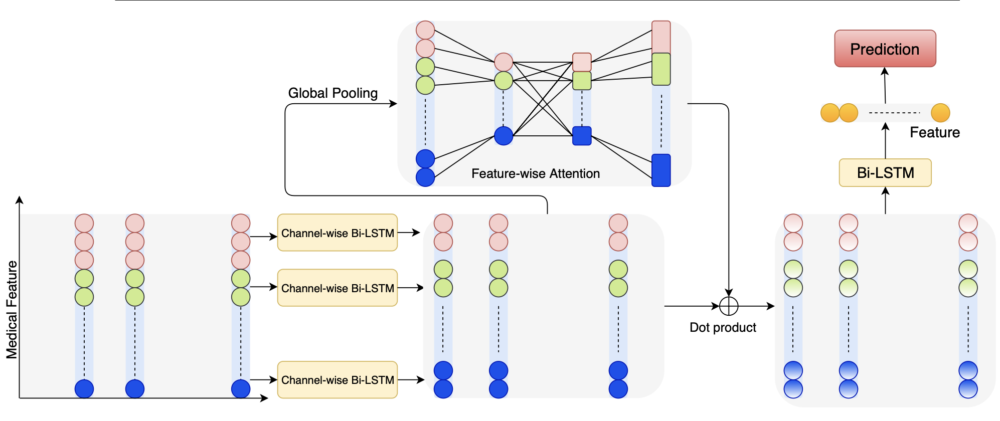
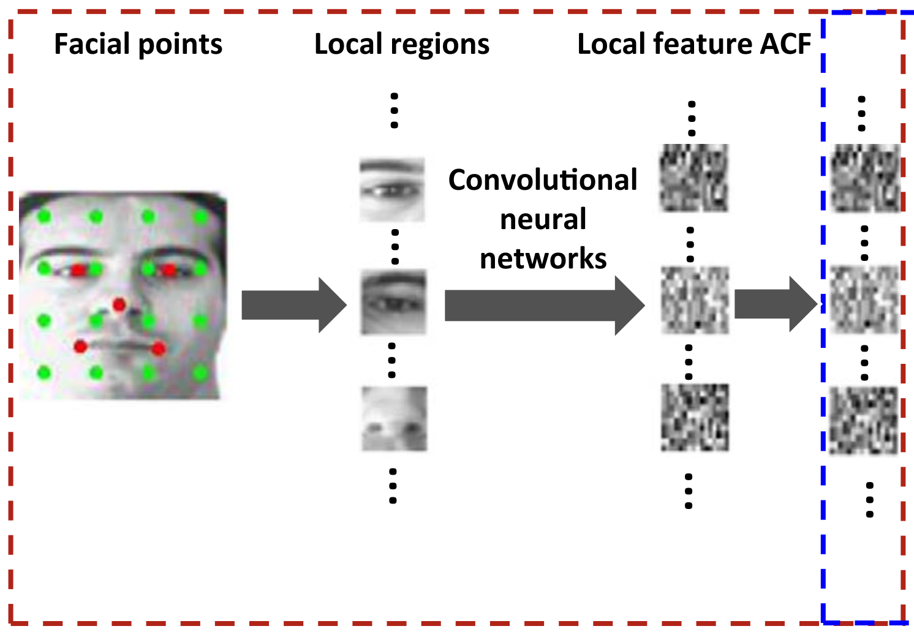

|
I am a final year M.Phil(Master of Philosophy) student at CS department of the University of Melbourne, advised by Prof. James Bailey and Dr. Sarah Erfani. Before comming to Univ of Melbourne, I got my B.Eng Degree in CS from Shenzhen University in 2016. My interests mainly focus on deep learning and computer vision. I am also open to other topics, such like recommendation system and NLP. I am currently looking for an internship. Email / CV / Google Scholar |
{kind=link}
|
I'm currently working on interpretable ML and its connection to adversarail ML. Much of my previous research were about deep learning and its applications on facial regonication. |
|  |
Guohang Zeng, Yousef Kowsar, Sarah Monazam Erfani, James Bailey Pattern Recognition, 2017 project page / bibtex / fast eigenvector code We produce state-of-the-art contours, regions and object candidates, and we compute normalized-cuts eigenvectors 20× faster. This paper subsumes our CVPR 2014 paper. |
|  |
Guohang Zeng Pattern Recognition, 2017 project page / bibtex / fast eigenvector code We produce state-of-the-art contours, regions and object candidates, and we compute normalized-cuts eigenvectors 20× faster. This paper subsumes our CVPR 2014 paper. |

|
Guohang Zeng, Jiancan Zhou, Xijia, Weicheng Xie, Linlin Shen International Conference on Automatic Face & Gesture Recognition, 2018 project page / bibtex / fast eigenvector code We produce state-of-the-art contours, regions and object candidates, and we compute normalized-cuts eigenvectors 20× faster. This paper subsumes our CVPR 2014 paper. |
|  |
Meng Yang, Xin Wang, Guohang Zeng, Linlin Shen Pattern Recognition, 2017 project page / bibtex / fast eigenvector code We produce state-of-the-art contours, regions and object candidates, and we compute normalized-cuts eigenvectors 20× faster. This paper subsumes our CVPR 2014 paper. |
|
|
|
Melbourne University Graduate Scholarship, 2018
Shenzhen University Top Scholarship, 2014 Loongson Scholarship, 2013 |